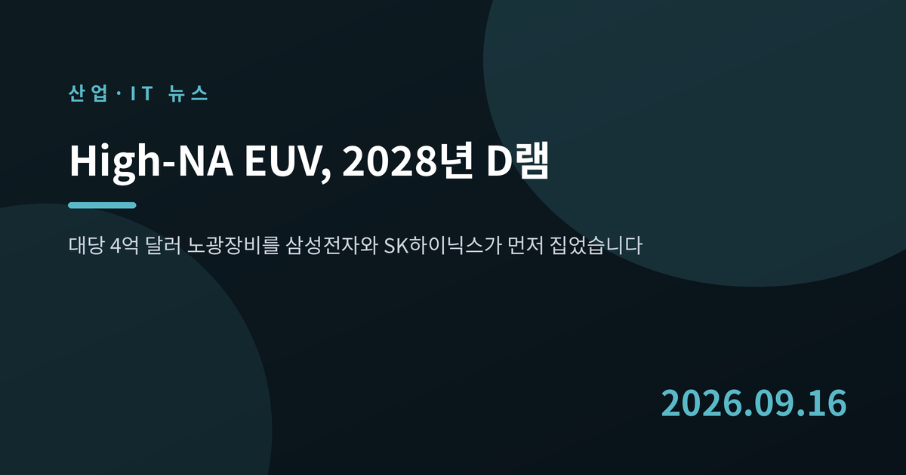
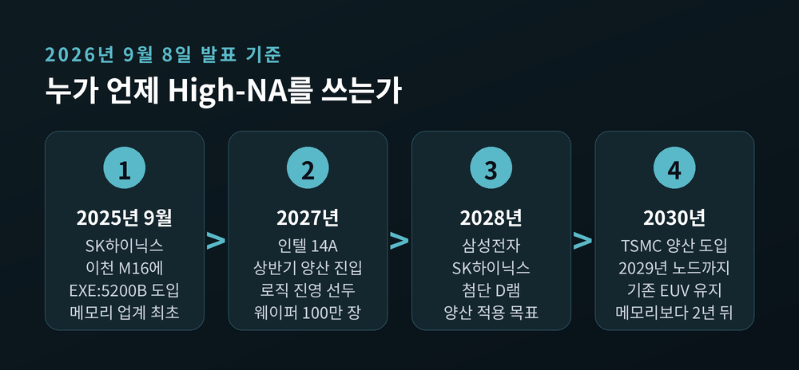
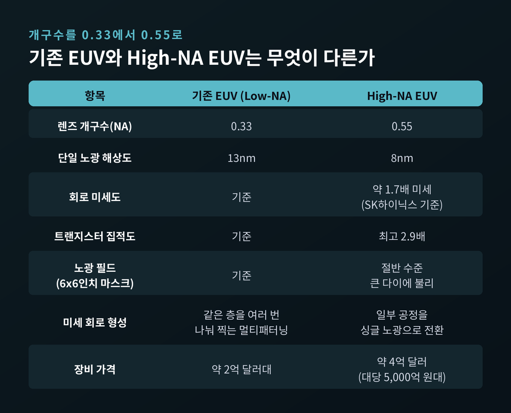
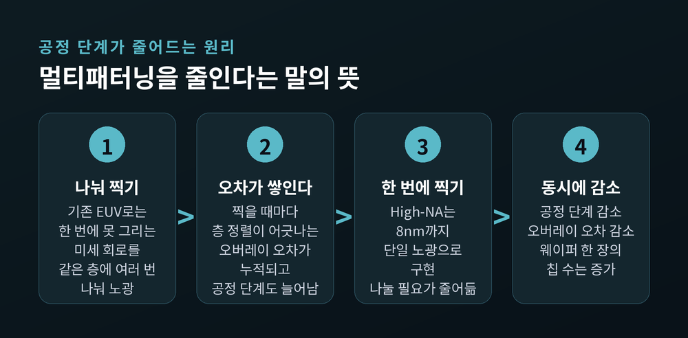
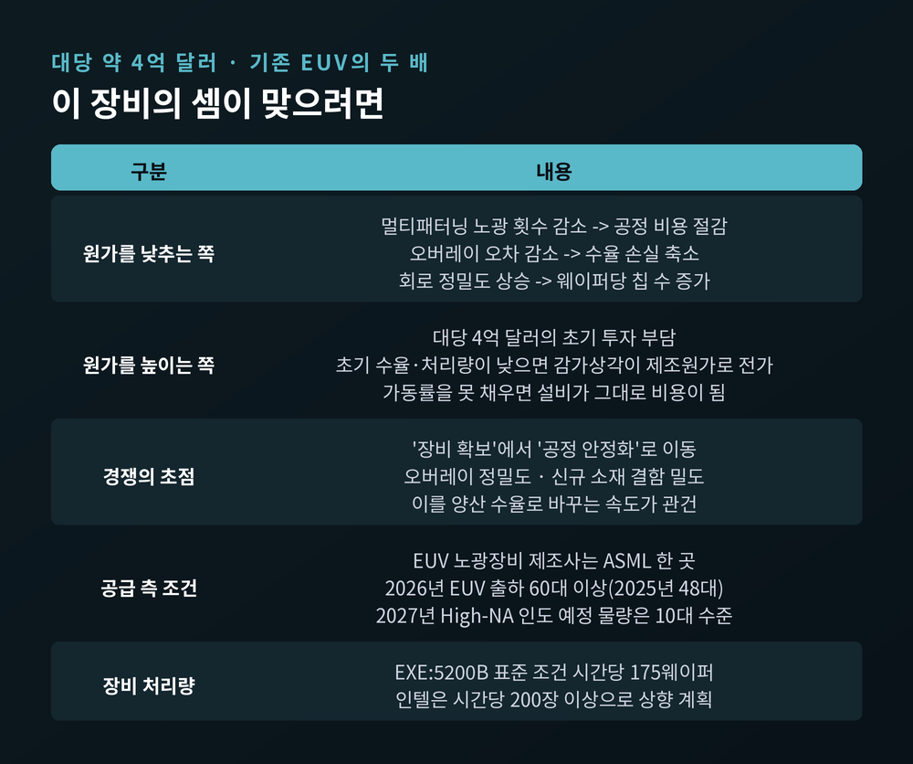
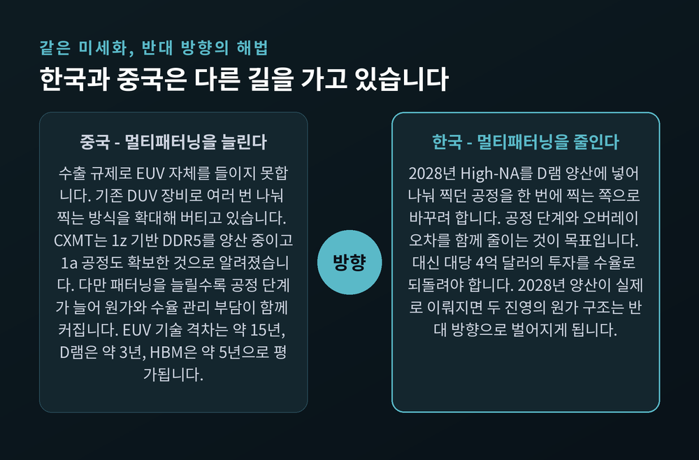

High-NA EUV, 삼성·SK하이닉스가 2028년 D램에 거는 승부수
이번 글에서는 지난 9월 8일 나온 삼성전자와 SK하이닉스의 발표를 정리해 보겠습니다. 두 회사가 같은 날, 대당 4억 달러짜리 노광장비를 2028년 D램 양산에 넣겠다고 밝혔습니다. 장비 하나가 메모리 공정의 판을 어떻게 흔드는지 차근히 짚어보려 합니다.

9월 8일, 두 회사가 같은 해를 말했습니다
삼성전자는 9월 8일 ASML이 주도하는 '대형 마스크 컨소시엄(Large Size Mask Consortium)'에 참여한다고 밝혔습니다. 차세대 12인치 포토마스크를 함께 개발하겠다는 내용입니다.
같은 발표에 더 중요한 대목이 들어 있었습니다. ASML과 협력해 2028년까지 첨단 D램 제조에 High NA EUV를 도입하겠다는 계획입니다. 삼성전자는 이를 업계 최초 적용으로 내세웠습니다.
SK하이닉스도 같은 날 2028년까지 D램 양산 공정에 High-NA EUV를 적용하는 것을 목표로 한다고 밝혔습니다. 뉴스핌·파이낸셜뉴스·이데일리·헤럴드경제가 나란히 전한 내용입니다.
다만 SK하이닉스 쪽 '최초'는 결이 조금 다릅니다. SK하이닉스는 2025년 9월 경기도 이천 M16에 ASML의 양산용 High-NA 장비 'TWINSCAN EXE:5200B'를 이미 들여놨습니다. 메모리 업계에서는 처음이었습니다.
정리하면 이렇습니다. 장비를 먼저 들인 곳은 SK하이닉스이고, 양산 적용을 먼저 하겠다고 공언한 곳은 삼성전자입니다. 목표 연도는 2028년으로 같습니다.

개구수 0.33에서 0.55로, 무엇이 달라지나
NA는 개구수(Numerical Aperture)의 줄임말입니다. 렌즈가 빛을 얼마나 넓은 각도로 모으는지를 나타내는 값입니다.
기존 EUV 장비의 NA는 0.33입니다. High-NA는 이 값을 0.55로 끌어올립니다.
비유하자면 손전등을 좁게 비추던 것을 넓은 각도로 퍼뜨려 모으는 일에 가깝습니다. 빛을 넓게 모을수록 더 작은 점을 또렷하게 찍을 수 있습니다.
숫자로 보면 이렇습니다. 지금의 Low-NA EUV는 한 번 노광으로 13nm까지 그릴 수 있습니다. High-NA는 같은 조건에서 8nm까지 내려갑니다. SK하이닉스 자료 기준으로는 기존 대비 약 1.7배 미세한 회로, 최고 2.9배의 집적도가 가능합니다.
핵심은 '한 번에'입니다. 기존 장비로 한 번에 못 그리는 미세 회로는 같은 층을 여러 번 나눠 찍습니다. 이를 멀티패터닝이라고 부릅니다. 찍는 횟수가 늘면 공정 단계가 늘고, 층을 겹칠 때마다 정렬이 어긋나는 오버레이 오차가 쌓입니다.
High-NA는 그중 일부를 싱글 노광으로 바꿉니다. 단계가 줄고, 어긋날 기회도 줄어듭니다.

공짜는 아닙니다 — 노광 필드가 절반으로
좋은 점만 있지는 않습니다. High-NA 스캐너는 기존 6×6인치 마스크를 쓸 경우 노광 필드가 Low-NA의 절반밖에 되지 않습니다. 한 번에 찍을 수 있는 면적이 줄어든다는 뜻입니다.
해상도를 얻는 대신 시야를 내준 셈입니다.
큰 칩을 만드는 쪽에는 이게 뼈아픕니다. 대형 AI 가속기처럼 다이가 큰 제품은 여러 노광 필드를 이어 붙이는 필드 스티칭을 하거나, 칩렛 여러 개로 쪼개야 합니다. 두 방법 모두 장비 생산성과 전력 소모에서 대가를 치릅니다.
이 제약을 풀려는 시도가 12인치 대형 마스크 전환입니다. 마스크를 키우면 나눠 새기고 이어 붙이는 작업의 제약이 풀립니다. ASML과 TSMC는 9월 7일 이 전환을 위한 산업 이니셔티브를 공식화했고, 2031년 파일럿 라인과 2033년 양산 준비를 목표로 잡았습니다.
쉬운 일은 아닙니다. 마스크 크기를 바꾸려면 EDA 소프트웨어부터 마스크를 만들고 검사하고 운반하는 장비까지 전부 손봐야 합니다. 사실상 업계 전체가 함께 움직여야 하는 일입니다.
왜 메모리가 파운드리보다 먼저 서는가
여기서 이번 뉴스의 가장 흥미로운 대목이 나옵니다.
파운드리 1위 TSMC는 2030년부터 High-NA를 양산에 쓰겠다고 지난주 밝혔습니다. 메모리보다 2년 늦습니다. TSMC는 2029년에 나올 A12·A13 노드까지는 기존 EUV를 계속 쓰겠다고 이미 확인한 상태입니다.
예전에는 미세공정의 새 장비가 언제나 파운드리에 먼저 들어갔습니다. 이번에는 메모리가 앞에 섭니다.
이유는 앞서 본 노광 필드에 있습니다. D램은 패턴이 규칙적으로 반복되고, 다이가 상대적으로 작습니다. 필드가 절반으로 줄어도 타격이 덜합니다. 반면 거대한 AI 가속기를 찍는 파운드리에는 필드 축소가 직격탄입니다.
반도체 업계 관계자는 글로벌이코노믹에 "D램은 반복 패턴이 많고 상대적으로 작은 다이를 사용해 High-NA의 해상도 이점을 활용하기 유리하다"고 설명했습니다.
여기에 수요가 겹칩니다. AI 데이터센터에서 메모리는 가장 구하기 어려운 품목이 되었습니다. D램 세대가 올라갈수록 EUV로 처리해야 할 레이어가 늘어왔고, 멀티패터닝 부담도 함께 커졌습니다. 미세화를 계속 밀고 나갈 도구가 절실해진 쪽이 메모리였던 것입니다.
TSMC가 오래 말을 아낀 이유도 분명합니다. 4억 달러짜리 스캐너 없이도 공정을 발전시킬 방법을 알고 있었기 때문입니다.

대당 4억 달러, 계산이 맞으려면
가격을 보겠습니다. ASML High-NA EUV 장비는 대당 약 4억 달러입니다. 기존 EUV의 두 배 수준이고, 국내 매체는 대당 5,000억 원대로 표기합니다.
장비 한 대 값이 웬만한 중견기업 몸값입니다. 이 돈이 회수되려면 셈이 맞아야 합니다.
더하기 쪽은 이렇습니다. 멀티패터닝 단계가 줄면 공정 비용이 줄고, 오버레이 오차로 날리던 수율 손실도 줄어듭니다. 회로를 더 정밀하게 그릴수록 웨이퍼 한 장에서 나오는 칩 수도 늘어납니다.
빼기 쪽이 만만치 않습니다. 업계 관계자는 "초기 수율과 처리량을 끌어올리지 못하면 감가상각 부담이 제조원가를 밀어 올릴 수 있다"고 지적했습니다. 수천억 원짜리 설비는 놀리는 순간 그대로 원가가 됩니다.
그래서 경쟁의 초점이 옮겨갑니다. 누가 장비를 먼저 확보했느냐에서, 누가 먼저 공정을 안정화하느냐로 말입니다. 오버레이 정밀도, 새 소재의 결함 밀도, 이를 양산 수율로 바꾸는 속도가 관건이 됩니다.
이 기준으로 보면 SK하이닉스는 2025년 9월부터 실물 장비로 공정을 익혀왔다는 점에서 초기에 다소 유리한 조건이라는 평가가 나옵니다. 다만 이것은 출발선의 차이일 뿐, 2028년 결과를 보장하지 않습니다.

ASML 한 곳뿐이라는 조건
돈이 있다고 살 수 있는 물건도 아닙니다.
EUV 노광장비를 만드는 회사는 전 세계에 ASML 하나뿐입니다. High-NA도 마찬가지입니다.
ASML은 2026년에 High-NA와 Low-NA를 합쳐 60대 이상의 EUV 출하를 계획하고 있습니다. 2025년에는 48대였습니다. 2027년에는 약 80대로 늘릴 전망이지만, High-NA만 놓고 보면 2027년 인도 예정 물량은 10대 수준입니다.
연간 열 대 남짓이 전 세계에 배분됩니다. 장비를 언제 몇 대 받느냐가 그 자체로 경쟁 변수가 된다는 뜻입니다.
로직 진영에서는 인텔이 가장 앞서 있습니다. High-NA로 300mm 웨이퍼 100만 장을 처리했다고 밝혔습니다. 다만 이 숫자에는 설치·검증·연구·공정 개발 물량이 모두 포함돼 있어, 판매용 칩 생산량으로 읽으면 곤란합니다. 인텔의 14A 노드는 2027년 상반기 양산 진입이 예정돼 있습니다.
장비 성능도 아직 올라가는 중입니다. EXE:5200B의 표준 조건 처리량은 시간당 175웨이퍼이고, 인텔은 이를 200장 이상으로 끌어올리겠다고 밝혔습니다.
중국과의 거리, 그리고 국내 소부장
방향이 정반대인 곳이 있습니다. 중국입니다.
중국은 수출 규제로 EUV를 들이지 못합니다. 그래서 기존 DUV 장비로 여러 번 나눠 찍는 멀티패터닝을 늘려 버티고 있습니다. EUV 분야 기술 격차는 약 15년, DUV 장비 기술은 3~5년 수준으로 평가됩니다.
성과가 없지는 않습니다. CXMT는 1z 기반 DDR5를 양산 중이고 1a 공정 기술도 확보한 것으로 알려졌습니다. D램은 약 3년, HBM은 약 5년 격차라는 것이 업계의 대체적 진단입니다.
그런데 이 대목이 중요합니다. High-NA는 멀티패터닝을 줄이는 길이고, 중국은 멀티패터닝을 늘려서 버티는 길입니다. 다중 패터닝을 확대하면 공정 단계가 늘어 원가와 수율 관리 부담이 커집니다. 2028년 양산이 실제로 이뤄지면 두 진영의 원가 구조는 반대 방향으로 벌어지게 됩니다.
국내 소부장에는 12인치 마스크 전환이 더 직접적인 변수입니다. 마스크 면적이 두 배가 되면 마스크 원판인 블랭크 마스크부터 결함 검사 장비, 오염을 막는 펠리클, 팹 안에서 마스크를 나르는 자동반송장치까지 전부 새로 설계해야 합니다. 부담이자 기회입니다.

아직 남아 있는 물음표
기대만 적기에는 변수가 많습니다.
첫째는 수율입니다. 장비가 좋아도 새 공정의 초기 수율은 낮게 시작합니다. 이 구간을 얼마나 빨리 지나느냐가 투자 회수 속도를 정합니다.
둘째는 마스크입니다. 6인치로는 필드가 좁고, 12인치는 2031년 파일럿·2033년 양산 준비가 목표입니다. 2028년 양산 시점에는 6인치 마스크로 시작해야 한다는 뜻입니다.
셋째는 소재입니다. 더 미세한 패턴을 받아내려면 포토레지스트(감광액)의 성능이 함께 올라와야 합니다. 새 소재의 결함 밀도는 그대로 수율로 넘어옵니다.
넷째는 필드 스티칭입니다. 이어 붙이는 자리에서 생기는 오차는 D램에서도 완전히 자유로운 문제가 아닙니다.
여기에 2028년이라는 시점 자체가 아직 2년 넘게 남았다는 점도 감안해야 합니다. 반도체 로드맵은 자주 미뤄집니다. TSMC가 몇 해 동안 말을 아끼다 입장을 바꾼 것처럼, 계획은 계획대로 움직이지 않습니다.
정리하면 이렇습니다. 이번 발표는 "장비를 사겠다"는 소식이 아니라 "미세화를 계속 밀고 나갈 도구를 메모리가 먼저 집었다"는 소식에 가깝습니다.
지금까지 새 장비는 언제나 파운드리부터 갔습니다. 이번에는 순서가 바뀌었습니다. 그 사실 자체가 지금 반도체 산업의 무게중심이 어디로 옮겨갔는지를 보여줍니다.
남은 것은 계산입니다. 4억 달러를 몇 년 만에 되돌려놓느냐. 2028년이 되어봐야 답이 나올 물음입니다.